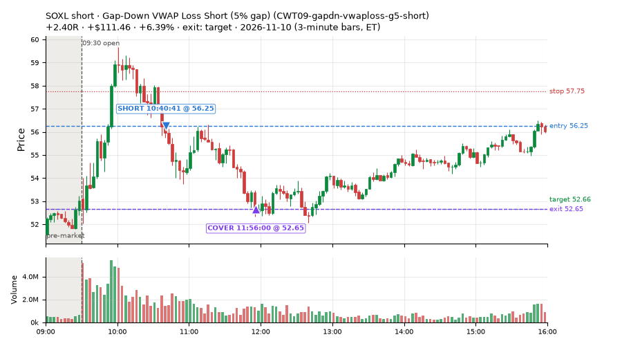
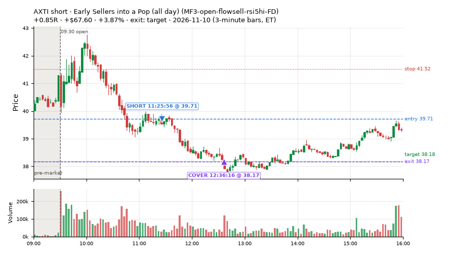
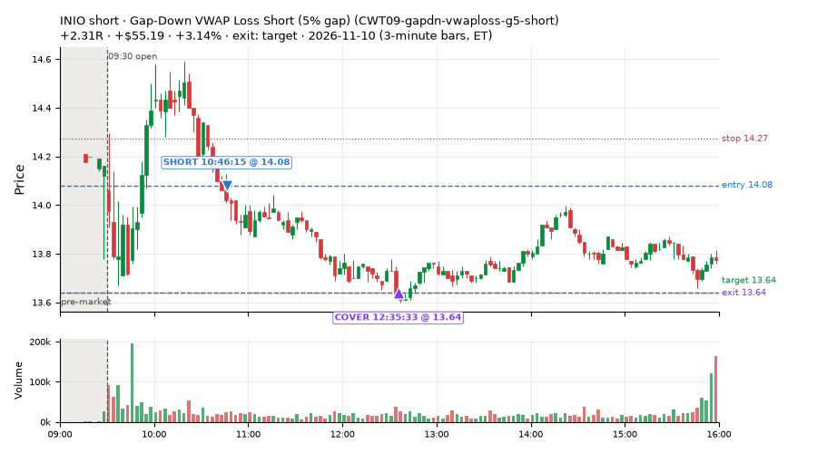
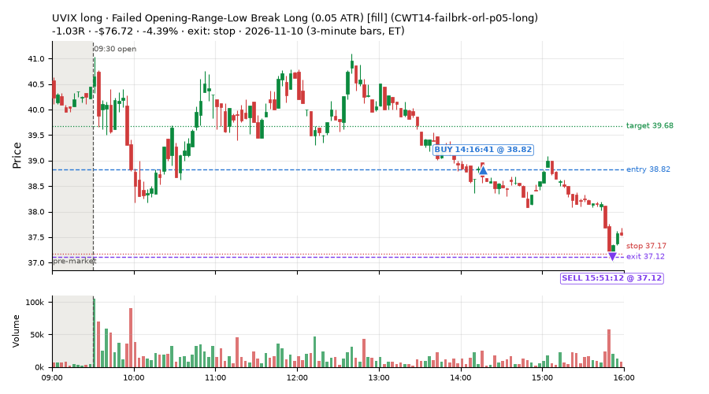
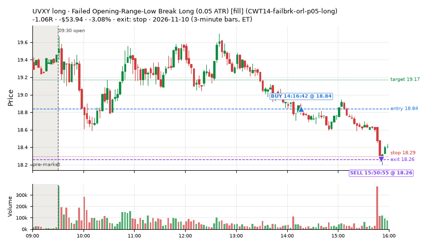
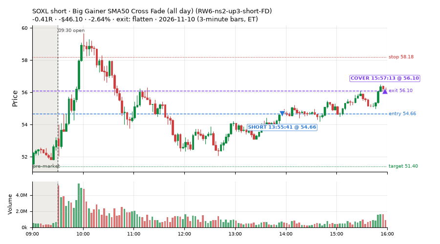
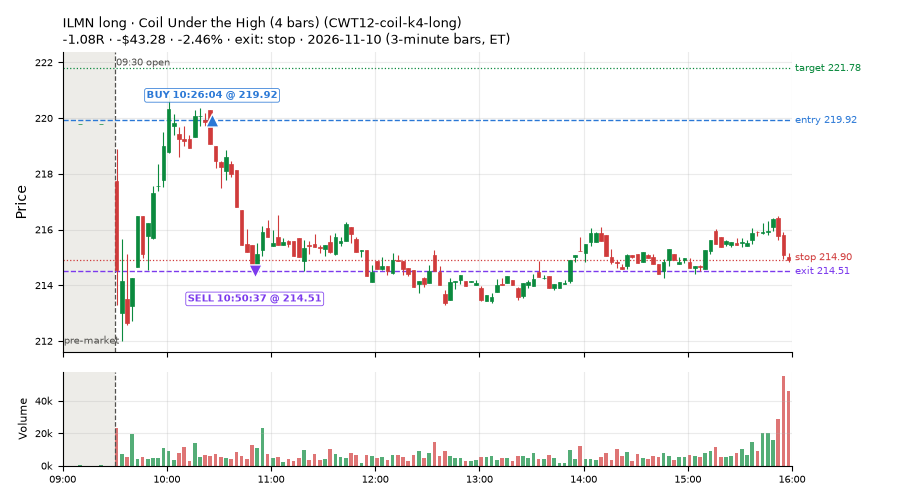
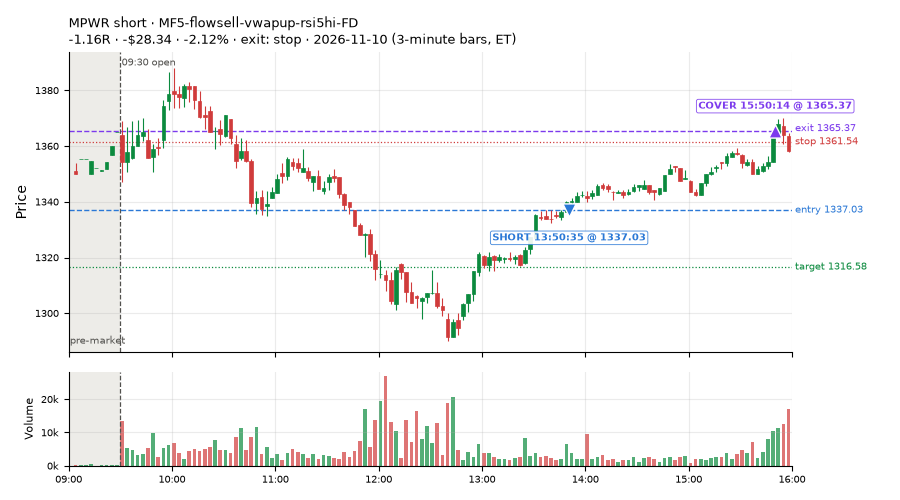

629 trades · win rate 72% · P/L $1,716.24
PROBATION: no live setup has passed both locked test periods. 10 owner-directed setups added 2026-10-08 (MarcoFlow top 5 + 5 new), untested live. RW6G1 (RW6 + VWAP band guard) added 2026-10-09, probation.

| Symbol | Setup | Side | In | Out | Entry | Exit | Exit reason | % gained | P/L |
|---|---|---|---|---|---|---|---|---|---|
| SOXL | Gap-Down VWAP Loss Short (5% gap) (CWT09-gapdn-vwaploss-g5-short) | short | 10:40 | 11:56 | 56.25 | 52.65 | target | +6.39% | $111.46 |
| AXTI | Early Sellers into a Pop (all day) (MF3-open-flowsell-rsi5hi-FD) | short | 11:25 | 12:36 | 39.71 | 38.17 | target | +3.87% | $67.60 |
| INIO | Gap-Down VWAP Loss Short (5% gap) (CWT09-gapdn-vwaploss-g5-short) | short | 10:46 | 12:35 | 14.08 | 13.64 | target | +3.14% | $55.19 |
| Symbol | Setup | Side | In | Out | Entry | Exit | Exit reason | % lost | P/L |
|---|---|---|---|---|---|---|---|---|---|
| UVIX | CWT14-failbrk-orl-p05-long | long | 14:16 | 15:51 | 38.82 | 37.12 | stop | -4.39% | $-76.72 |
| UVXY | CWT14-failbrk-orl-p05-long | long | 14:16 | 15:50 | 18.84 | 18.26 | stop | -3.08% | $-53.94 |
| SOXL | RW6-ns2-up3-short-FD | short | 13:55 | 15:57 | 54.66 | 56.10 | flatten | -2.64% | $-46.10 |
| ILMN | CWT12-coil-k4-long | long | 10:26 | 10:50 | 219.92 | 214.51 | stop | -2.46% | $-43.28 |
| MPWR | MF5-flowsell-vwapup-rsi5hi-FD | short | 13:50 | 15:50 | 1337.03 | 1365.37 | stop | -2.12% | $-28.34 |








Signal to fill: median 2s, 90th percentile 5s (629 trades). Bars close each minute; the order follows the bar close.
Best excursion (MFE): median 0.48R; worst (MAE) median 0.38R. 23% of trades never got +0.25R in our favour; 5 reached +1R and still closed at or below 0.
| Symbol | Setup | Best R | Worst R | Closed R |
|---|---|---|---|---|
| GEV | CWT09-gapdn-bounce-g5-lowerhalf-short | +1.80 | -1.02 | -1.01 |
| BKR | RW6-ns2-up3-short-FD | +3.22 | -0.02 | +0.73 |
| BKR | NS2-sma50break-overbought-short-FD | +3.19 | -0.02 | +0.72 |
| BKR | RW6G1-ns2-up3-vwap2sd-short-FD | +3.15 | -0.03 | +0.71 |
| NAIL | CWT09-gapdn-vwaploss-g5-short | +1.35 | -1.02 | -1.05 |
| Entry time | Trades | Win | Avg R | P/L |
|---|---|---|---|---|
| 09:50-10:30 | 229 | 81% | +0.16 | $665.90 |
| 10:30-11:30 | 173 | 76% | +0.19 | $943.84 |
| 11:30-13:00 | 133 | 65% | +0.03 | $201.90 |
| 13:00-14:00 | 45 | 64% | +0.08 | $107.84 |
| 14:00-16:00 | 49 | 39% | -0.06 | $-203.23 |
| Setup | Trades | Win | Avg R | Adj R (net of SPY) | Avg R ex-market (all sessions) | P/L |
|---|---|---|---|---|---|---|
| Gap-Down Bounce Rejection Short (5% gap) (CWT09-gapdn-bounce-g5-lowerhalf-short) | 7.0 | 57% | -0.12 | -0.22 | -0.11 (beta -1.01, n 106) | $62.73 |
| Gap-Down VWAP Loss Short (5% gap) (CWT09-gapdn-vwaploss-g5-short) | 7.0 | 71% | +0.96 | +0.80 | -0.20 (beta -3.15, n 81) | $242.73 |
| Coil Under the High (4 bars) (CWT12-coil-k4-long) | 34.0 | 76% | +0.14 | +0.36 | +0.02 (beta +0.75, n 325) | $13.18 |
| Coil Under the High (6 bars) (CWT12-coil-k6-long) | 8.0 | 12% | -0.64 | -0.62 | -0.01 (beta +1.27, n 124) | $-46.08 |
| Stretched Above VWAP Fade (CWT13-vwapstretch-z05-short) | 13.0 | 31% | -0.26 | +0.17 | -0.01 (beta -0.56, n 125) | $-38.62 |
| Failed Opening-Range-Low Break Long (0.05 ATR) [fill] (CWT14-failbrk-orl-p05-long) | 96.0 | 85% | +0.25 | +0.25 | -0.07 (beta +0.70, n 690) | $350.29 |
| Failed Opening-Range-Low Break Long (0.05 ATR, low volume) [fill] (CWT14-failbrk-orl-p05-lowvol-long) | 84.0 | 93% | +0.37 | +0.40 | -0.03 (beta +0.66, n 581) | $512.53 |
| Failed Opening-Range-Low Break Long (0.1 ATR) [fill] (CWT14-failbrk-orl-p10-long) | 45.0 | 89% | +0.27 | +0.22 | -0.07 (beta +0.93, n 395) | $223.21 |
| Failed Opening-Range-Low Break Long (low volume) (CWT14-failbrk-orl-p10-lowvol-long) | 53.0 | 91% | +0.29 | +0.18 | -0.02 (beta +0.95, n 432) | $255.85 |
| Failed Prior-Day-High Break Short (0.05 ATR, low volume) [fill] (CWT14-failbrk-pdh-p05-lowvol-short) | 39.0 | 69% | +0.11 | -0.02 | -0.11 (beta -1.03, n 280) | $145.09 |
| Failed Prior-Day-High Break Short (low volume) (CWT14-failbrk-pdh-p10-lowvol-short) | 17.0 | 76% | +0.15 | -0.08 | -0.17 (beta -1.14, n 145) | $56.66 |
| Failed Prior-Day-High Break Short (0.1 ATR) [fill] (CWT14-failbrk-pdh-p10-short) | 21.0 | 81% | +0.20 | -0.02 | -0.17 (beta -1.25, n 252) | $101.38 |
| Failed Prior-Day-Low Break Long (shallow) (CWT14-failbrk-pdl-p05-long) | 50.0 | 72% | -0.03 | +0.07 | -0.01 (beta +0.53, n 243) | $-5.24 |
| Failed Prior-Day-Low Break Long (0.05 ATR, low volume) [fill] (CWT14-failbrk-pdl-p05-lowvol-long) | 32.0 | 75% | -0.03 | +0.15 | -0.05 (beta +1.06, n 210) | $-33.44 |
| Opening-Range Low Sweep Reversal (LIQ-orl-sweep-open15-s25-long) | 7.0 | 100% | +0.99 | +0.55 | -0.05 (beta +0.09, n 161) | $130.65 |
| MF1-945-flowsell-vwapup-FD | 4.0 | 0% | -1.07 | -1.07 | -0.14 (beta -2.41, n 74) | $-30.32 |
| Early Sellers into a Pop (all day) (MF3-open-flowsell-rsi5hi-FD) | 23.0 | 22% | -0.38 | +0.14 | -0.06 (beta -1.40, n 93) | $-65.96 |
| MF5-flowsell-vwapup-rsi5hi-FD | 12.0 | 25% | -0.43 | +0.16 | +0.05 (beta -1.64, n 50) | $-72.31 |
| NS2-sma50break-overbought-short-FD | 15.0 | 20% | -0.17 | -0.01 | -0.13 (beta -0.88, n 124) | $-54.92 |
| Big Loser VWAP Reclaim Fade (all day) (NS3-failed-vwap-reclaim-short-FD) | 4.0 | 50% | -0.33 | -0.22 | -0.30 (beta -0.68, n 67) | $-20.03 |
| NS5-sma50-flush-oversold-long-FD | 1.0 | 0% | -1.02 | -0.92 | +0.04 (beta +1.63, n 18) | $-22.80 |
| RW2-exhaustion-noon-adv150-short-FD | 3.0 | 33% | -0.27 | -0.35 | -0.35 (beta -1.06, n 278) | $-28.36 |
| RW4-ns3-adv150-short-FD | 1.0 | 100% | +0.08 | +0.12 | -0.19 (beta -0.40, n 57) | $2.61 |
| Big Gainer SMA50 Cross Fade (all day) (RW6-ns2-up3-short-FD) | 8.0 | 25% | +0.02 | +0.07 | -0.01 (beta -1.67, n 67) | $-61.21 |
| RW6G1-ns2-up3-vwap2sd-short-FD | 5.0 | 20% | -0.14 | +0.02 | +0.10 (beta -0.50, n 26) | $-19.55 |
| ST1-ordn-long-pm-t05s1-FD | 4.0 | 50% | +0.03 | +0.02 | -0.07 (beta +1.10, n 34) | $-13.04 |
| ST2-slope20up-long-am-t05s1-FD | 15.0 | 100% | +0.44 | +0.31 | -0.01 (beta +0.87, n 190) | $235.12 |
| ST4-emadn-long-am-t1s05-FD | 1.0 | 100% | +1.10 | +0.98 | +0.67 (beta +2.43, n 21) | $46.24 |
| Midday Gap-Up Dip Buy (heat_fade_long) failed Apr-Jun holdout: -0.138R/trade over 1043 trades | 1.0 | 100% | +0.98 | +0.66 | +0.23 (beta +1.89, n 98) | $15.82 |
| heat_fade_long-FD | 1.0 | 100% | +0.70 | +0.92 | -0.20 (beta +1.26, n 94) | $14.00 |
| Morning Bounce Fade (all day) (heat_fade_short-FD) | 18.0 | 6% | -0.68 | -0.44 | -0.20 (beta -1.48, n 343) | $-179.99 |
Market direction (SPY, beta 1) accounted for $-489.23 of today's $1,716.24; the rest ($2,205.47) came from the setups themselves. Avg R net of SPY: +0.16 (incl. a hedge leg's cost; report only).
33 setups live today. Today: 1524 signals, 629 taken, 39 lost because another setup held the symbol (3%). Since 2026-10-21 (15 sessions): 17019 signals, 5979 taken, 852 lost to other setups (5%). Peak open positions today 172 of 200 slots. Earnings blackout removed 1253 symbols before scanning.
Simulated playing time (not live): 10995 what-if trades of signals not taken, avg -0.00R, 57% winners; of them 851 lost to another setup (avg -0.06R).
Crowded out: NS2-sma50break-overbought-short · Starved: MF1-945-flowsell-vwapup-FD, heat_fade_long, heat_fade_long-FD, heat_fade_short-FD
| Prio | Setup | Today sig / taken | Sessions | Signals / taken / trades | Taken/day | Expected/day | Lost to other setups | Lost to (setup n) | Top skip reasons | SIMULATED: not-taken n / avg R / win | Verdict |
|---|---|---|---|---|---|---|---|---|---|---|---|
| 1 | ST1-ordn-long-pm-t05s1-FD ST1-ordn-long-pm-t05s1-FD | 4 / 4 | 15 | 46 / 34 / 34 | 2.27 | 3.49 | 0 | – | spread / quote / size 10, broker rejected 1, other 1 | 12 / -0.35R / 33% | slow 11.3 entries/week; ~5 weeks to 60 trades |
| 2 | Big Gainer SMA50 Cross Fade (all day) RW6-ns2-up3-short-FD | 21 / 8 | 15 | 166 / 67 / 67 | 4.47 | 7.12 | 9 | CWT12-coil-k4-long 4, RW6-ns2-up3-short-FD 3, NS2-sma50break-overbought-short-FD 3 | not shortable / shorts off 50, per-setup cap 18, daily loss cap 12 | 99 / +0.28R / 69% | ok 22.3 entries/week |
| 3 | NS2-sma50break-overbought-short-FD NS2-sma50break-overbought-short-FD | 32 / 15 | 15 | 299 / 124 / 124 | 8.27 | 17.08 | 11 | CWT12-coil-k4-long 8, CWT12-coil-k6-long 3, LIQ-orl-sweep-open15-s25-long 1 | not shortable / shorts off 46, per-setup cap 42, daily loss cap 39 | 175 / +0.22R / 67% | ok 41.3 entries/week |
| 4 | Big Gainer Average Reclaim Fade NS2-sma50break-overbought-short | 14 / 0 | 15 | 108 / 8 / 8 | 0.53 | 5.74 | 59 | NS2-sma50break-overbought-short-FD 49, RW6-ns2-up3-short-FD 12, CWT12-coil-k4-long 7 | symbol held by another setup 59, spread / quote / size 17, not shortable / shorts off 15 | 100 / +0.14R / 62% | crowded-out 59 of 108 signals (55%) lost to setups already holding the symbol |
| 5 | MF1-945-flowsell-vwapup-FD MF1-945-flowsell-vwapup-FD | 22 / 4 | 15 | 242 / 74 / 74 | 4.93 | 23.94 | 3 | CWT12-coil-k6-long 1, CWT14-failbrk-orl-p05-long 1, CWT12-coil-k4-long 1 | daily loss cap 99, spread / quote / size 50, not shortable / shorts off 12 | 168 / -0.17R / 31% | starved 4.93 entries/day vs ~23.94 expected |
| 6 | ST2-slope20up-long-am-t05s1-FD ST2-slope20up-long-am-t05s1-FD | 17 / 15 | 15 | 517 / 190 / 190 | 12.67 | 24.03 | 25 | heat_fade_short-FD 10, CWT09-gapdn-bounce-g5-lowerhalf-short 6, NS3-failed-vwap-reclaim-short-FD 3 | daily loss cap 219, spread / quote / size 42, per-setup cap 37 | 324 / -0.05R / 61% | ok 63.3 entries/week |
| 7 | Midday Gap-Up Dip Buy heat_fade_long | 1 / 1 | 15 | 163 / 98 / 98 | 6.53 | 30.36 | 17 | heat_fade_long-FD 9, NS3-failed-vwap-reclaim-short-FD 3, RW4-ns3-adv150-short-FD 3 | spread / quote / size 22, symbol held by another setup 17, daily loss cap 15 | 65 / -0.23R / 43% | starved 6.53 entries/day vs ~30.36 expected |
| 8 | Opening-Range Low Sweep Reversal LIQ-orl-sweep-open15-s25-long | 11 / 7 | 15 | 315 / 161 / 161 | 10.73 | – | 16 | CWT14-failbrk-orl-p10-long 13, CWT14-failbrk-orl-p05-lowvol-long 13, CWT14-failbrk-orl-p10-lowvol-long 11 | per-setup cap 57, daily loss cap 45, spread / quote / size 26 | 154 / -0.03R / 44% | ok 53.7 entries/week |
| 9 | RW2-exhaustion-noon-adv150-short-FD RW2-exhaustion-noon-adv150-short-FD | 51 / 3 | 15 | 769 / 278 / 278 | 18.53 | 50.34 | 14 | CWT12-coil-k4-long 5, CWT12-coil-k6-long 3, NS3-failed-vwap-reclaim-short-FD 3 | daily loss cap 288, not shortable / shorts off 79, spread / quote / size 69 | 491 / -0.08R / 49% | ok 92.7 entries/week |
| 10 | heat_fade_long-FD heat_fade_long-FD | 2 / 1 | 15 | 310 / 94 / 94 | 6.27 | 51.74 | 47 | heat_fade_long 42, ST1-ordn-long-pm-t05s1-FD 2, heat_fade_short-FD 2 | daily loss cap 120, spread / quote / size 49, symbol held by another setup 47 | 216 / -0.14R / 45% | starved 6.27 entries/day vs ~51.74 expected |
| 11 | Failed Opening-Range-Low Break Long (low volume) CWT14-failbrk-orl-p10-lowvol-long | 75 / 53 | 15 | 777 / 432 / 432 | 28.80 | – | 8 | CWT14-failbrk-pdh-p05-lowvol-short 4, CWT14-failbrk-orl-p05-long 3, CWT14-failbrk-pdh-p10-short 2 | daily loss cap 145, spread / quote / size 135, per-setup cap 33 | 341 / +0.16R / 59% | ok 144.0 entries/week |
| 12 | Failed Opening-Range-Low Break Long (0.1 ATR) [fill] CWT14-failbrk-orl-p10-long | 81 / 45 | 15 | 907 / 395 / 395 | 26.33 | – | 14 | CWT14-failbrk-orl-p05-lowvol-long 10, CWT14-failbrk-orl-p05-long 10, CWT14-failbrk-orl-p10-lowvol-long 9 | daily loss cap 273, spread / quote / size 133, per-setup cap 53 | 507 / +0.06R / 60% | ok 131.7 entries/week |
| 13 | Morning Bounce Fade heat_fade_short | 2 / 0 | 15 | 364 / 187 / 187 | 12.47 | 31.76 | 1 | CWT14-failbrk-pdl-p05-lowvol-long 1 | spread / quote / size 103, daily loss cap 37, per-setup cap 22 | 177 / +0.18R / 59% | ok 62.3 entries/week |
| 14 | Failed Opening-Range-Low Break Long (0.05 ATR, low volume) [fill] CWT14-failbrk-orl-p05-lowvol-long | 188 / 84 | 15 | 1688 / 581 / 581 | 38.73 | – | 24 | CWT14-failbrk-orl-p10-lowvol-long 9, CWT14-failbrk-orl-p10-long 8, CWT14-failbrk-orl-p05-long 7 | daily loss cap 644, per-setup cap 198, spread / quote / size 194 | 1102 / -0.02R / 61% | ok 193.7 entries/week |
| 15 | Morning Bounce Fade (all day) heat_fade_short-FD | 44 / 18 | 15 | 991 / 343 / 343 | 22.87 | 173.78 | 241 | heat_fade_short 188, LIQ-orl-sweep-open15-s25-long 15, CWT14-failbrk-orl-p05-long 9 | symbol held by another setup 241, daily loss cap 180, spread / quote / size 153 | 648 / +0.05R / 53% | starved 22.87 entries/day vs ~173.78 expected |
| 16 | Failed Opening-Range-Low Break Long (0.05 ATR) [fill] CWT14-failbrk-orl-p05-long | 272 / 96 | 15 | 2317 / 690 / 690 | 46.00 | – | 148 | CWT14-failbrk-orl-p10-lowvol-long 120, CWT14-failbrk-orl-p10-long 119, CWT14-failbrk-orl-p05-lowvol-long 117 | daily loss cap 832, per-setup cap 311, spread / quote / size 275 | 1622 / -0.05R / 60% | ok 230.0 entries/week |
| 17 | Gap-Down Bounce Rejection Short (5% gap) CWT09-gapdn-bounce-g5-lowerhalf-short | 63 / 7 | 15 | 634 / 106 / 106 | 7.07 | – | 4 | CWT12-coil-k4-long 3, CWT12-coil-k6-long 1, CWT14-failbrk-orl-p05-long 1 | not shortable / shorts off 409, spread / quote / size 57, per-setup cap 32 | 526 / +0.22R / 59% | ok 35.3 entries/week |
| 18 | Failed Prior-Day-High Break Short (0.05 ATR, low volume) [fill] CWT14-failbrk-pdh-p05-lowvol-short | 63 / 39 | 14 | 787 / 280 / 280 | 20.00 | – | 10 | CWT14-failbrk-orl-p10-long 4, CWT14-failbrk-orl-p10-lowvol-long 3, CWT14-failbrk-orl-p05-long 3 | daily loss cap 286, spread / quote / size 160, not shortable / shorts off 41 | 506 / +0.01R / 65% | ok 100.0 entries/week |
| 19 | Failed Prior-Day-High Break Short (low volume) CWT14-failbrk-pdh-p10-lowvol-short | 27 / 17 | 14 | 340 / 145 / 145 | 10.36 | – | 4 | CWT14-failbrk-orl-p10-long 2, CWT14-failbrk-orl-p05-long 2, CWT12-coil-k4-long 1 | spread / quote / size 90, daily loss cap 78, not shortable / shorts off 16 | 194 / -0.03R / 63% | ok 51.8 entries/week |
| 20 | Failed Prior-Day-High Break Short (0.1 ATR) [fill] CWT14-failbrk-pdh-p10-short | 39 / 21 | 13 | 547 / 252 / 252 | 19.38 | – | 10 | CWT14-failbrk-orl-p10-long 4, CWT14-failbrk-pdh-p05-lowvol-short 3, CWT14-failbrk-pdh-p10-lowvol-short 3 | spread / quote / size 147, daily loss cap 82, not shortable / shorts off 36 | 294 / -0.05R / 62% | ok 96.9 entries/week |
| 21 | Stretched Above VWAP Fade CWT13-vwapstretch-z05-short | 18 / 13 | 13 | 311 / 125 / 125 | 9.62 | – | 3 | LIQ-orl-sweep-open15-s25-long 1, CWT12-coil-k4-long 1, CWT12-coil-k6-long 1 | daily loss cap 131, spread / quote / size 23, not shortable / shorts off 21 | 186 / -0.10R / 47% | ok 48.1 entries/week |
| 22 | Gap-Down VWAP Loss Short (5% gap) CWT09-gapdn-vwaploss-g5-short | 72 / 7 | 12 | 717 / 81 / 81 | 6.75 | – | 4 | CWT14-failbrk-orl-p05-long 2, CWT14-failbrk-orl-p05-lowvol-long 1, CWT14-failbrk-pdl-p05-long 1 | not shortable / shorts off 490, spread / quote / size 66, per-setup cap 54 | 628 / -0.02R / 43% | ok 33.8 entries/week |
| 23 | Coil Under the High (6 bars) CWT12-coil-k6-long | 16 / 8 | 11 | 433 / 124 / 124 | 11.27 | – | 23 | heat_fade_short 6, CWT14-failbrk-pdh-p10-short 5, RW2-exhaustion-noon-adv150-short-FD 4 | daily loss cap 148, spread / quote / size 97, broker rejected 40 | 309 / +0.13R / 45% | ok 56.4 entries/week |
| 24 | Coil Under the High (4 bars) CWT12-coil-k4-long | 70 / 34 | 9 | 911 / 325 / 325 | 36.11 | – | 39 | RW2-exhaustion-noon-adv150-short-FD 14, CWT14-failbrk-pdh-p05-lowvol-short 7, CWT14-failbrk-pdh-p10-short 6 | per-setup cap 376, broker rejected 87, spread / quote / size 83 | 585 / -0.02R / 67% | ok 180.6 entries/week |
| 25 | Failed Prior-Day-Low Break Long (shallow) CWT14-failbrk-pdl-p05-long | 121 / 50 | 8 | 792 / 243 / 243 | 30.38 | – | 6 | CWT14-failbrk-orl-p10-lowvol-long 3, CWT14-failbrk-orl-p10-long 3, CWT14-failbrk-orl-p05-lowvol-long 3 | daily loss cap 403, spread / quote / size 123, broker rejected 13 | 544 / -0.08R / 60% | ok 151.9 entries/week |
| 26 | Failed Prior-Day-Low Break Long (0.05 ATR, low volume) [fill] CWT14-failbrk-pdl-p05-lowvol-long | 87 / 32 | 8 | 555 / 210 / 210 | 26.25 | – | 20 | CWT14-failbrk-orl-p05-lowvol-long 16, CWT14-failbrk-orl-p05-long 13, CWT14-failbrk-pdl-p05-long 10 | daily loss cap 185, spread / quote / size 115, broker rejected 25 | 341 / -0.06R / 61% | ok 131.2 entries/week |
| 27 | Big Loser VWAP Reclaim Fade (all day) NS3-failed-vwap-reclaim-short-FD | 23 / 4 | 7 | 364 / 67 / 67 | 9.57 | 22.02 | 34 | NS3-failed-vwap-reclaim-short-FD 10, RW4-ns3-adv150-short-FD 9, CWT14-failbrk-orl-p10-lowvol-long 9 | daily loss cap 173, not shortable / shorts off 58, symbol held by another setup 34 | 297 / -0.07R / 48% | ok 47.9 entries/week |
| 28 | RW4-ns3-adv150-short-FD RW4-ns3-adv150-short-FD | 16 / 1 | 7 | 265 / 57 / 57 | 8.14 | 17.34 | 48 | NS3-failed-vwap-reclaim-short-FD 25, RW4-ns3-adv150-short-FD 23, heat_fade_long 10 | daily loss cap 101, symbol held by another setup 48, not shortable / shorts off 28 | 208 / -0.12R / 45% | ok 40.7 entries/week |
| 29 | Early Sellers into a Pop (all day) MF3-open-flowsell-rsi5hi-FD | 32 / 23 | 6 | 164 / 93 / 93 | 15.50 | 24.16 | 3 | ST2-slope20up-long-am-t05s1-FD 1, heat_fade_long 1, CWT14-failbrk-orl-p05-long 1 | daily loss cap 23, not shortable / shorts off 17, broker rejected 16 | 71 / +0.12R / 58% | ok 77.5 entries/week |
| 30 | MF5-flowsell-vwapup-rsi5hi-FD MF5-flowsell-vwapup-rsi5hi-FD | 18 / 12 | 6 | 93 / 50 / 50 | 8.33 | 15.47 | 0 | – | broker rejected 21, daily loss cap 15, spread / quote / size 7 | 43 / -0.04R / 54% | ok 41.7 entries/week |
| 31 | NS5-sma50-flush-oversold-long-FD NS5-sma50-flush-oversold-long-FD | 4 / 1 | 5 | 45 / 18 / 18 | 3.60 | 6.32 | 3 | NS3-failed-vwap-reclaim-short-FD 2, RW4-ns3-adv150-short-FD 2, ST4-emadn-long-am-t1s05-FD 1 | daily loss cap 14, broker rejected 6, spread / quote / size 4 | 27 / +0.27R / 67% | ok 18.0 entries/week |
| 32 | ST4-emadn-long-am-t1s05-FD ST4-emadn-long-am-t1s05-FD | 2 / 1 | 5 | 29 / 21 / 21 | 4.20 | 2.77 | 1 | heat_fade_short-FD 1 | spread / quote / size 6, symbol held by another setup 1, broker rejected 1 | 8 / +0.38R / 50% | ok 21.0 entries/week |
| 33 | RW6G1-ns2-up3-vwap2sd-short-FD RW6G1-ns2-up3-vwap2sd-short-FD | 16 / 5 | 5 | 53 / 26 / 26 | 5.20 | 3.73 | 3 | RW6-ns2-up3-short-FD 3, NS2-sma50break-overbought-short-FD 2, RW6G1-ns2-up3-vwap2sd-short-FD 2 | not shortable / shorts off 18, broker rejected 4, symbol held by another setup 3 | 27 / +0.08R / 52% | ok 26.0 entries/week |
Every trade is attached as a CSV you can open and edit in Excel or Google Sheets. Live page: https://misiti15.github.io/MCF/live/